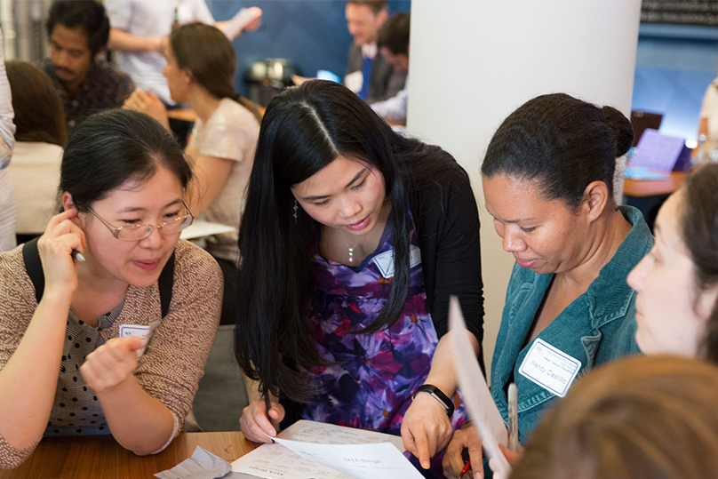
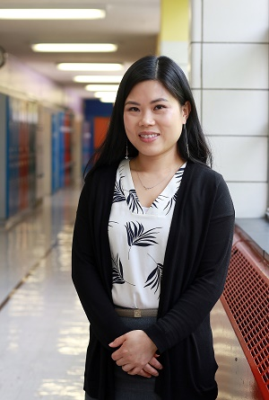

Susie S. Li
Awards & Recognitions
MfA Stories: "Cracking the Code"
The article delves into my journey from teaching mathematics to embracing the challenge of becoming a computer science educator at P.S. 126 Jacob August Riis. When offered the opportunity to transition, I felt a mix of excitement and apprehension, knowing that teaching coding would require a different skill set and approach. Drawing from my previous experiences and the support of the MƒA community, I embarked on this new chapter with determination. Through professional development workshops, particularly focusing on Arduino and LEGO EV3 robotics, I honed my skills and developed engaging STEM lessons for my students. With each step, I've grown as an educator, embracing a more exploratory and student-centered approach while fostering a sense of community and collaboration in my classroom.
Click on Cracking the Code to read the full article.
2017 Blackboard Award Honoree: Susie Li
As a recipient of "The 2017 Blackboard Awards for Teacher Excellence in Education" from New York Family Magazine, I was recognized for my innovative approach to teaching mathematics in the 6th grade. By implementing a flipped classroom teaching model, I aimed to break down barriers to learning and make mathematics accessible to all students and their families. In the flipped classroom model, traditional teaching methods are reversed: students engage with instructional content outside of class through videos or readings, allowing for more interactive and personalized learning experiences during class time. Through this approach, I sought to create a supportive learning environment where students could explore mathematical concepts at their own pace, receive individualized support, and actively participate in collaborative problem-solving activities. This recognition underscored the impact of leveraging innovative pedagogical strategies to enhance student learning outcomes and promote inclusivity in the classroom.
Click on 2017 Blackboard Award Honoree: Susie Li to read the full article.